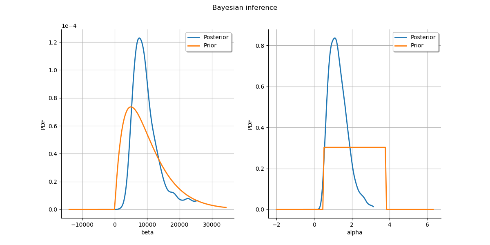
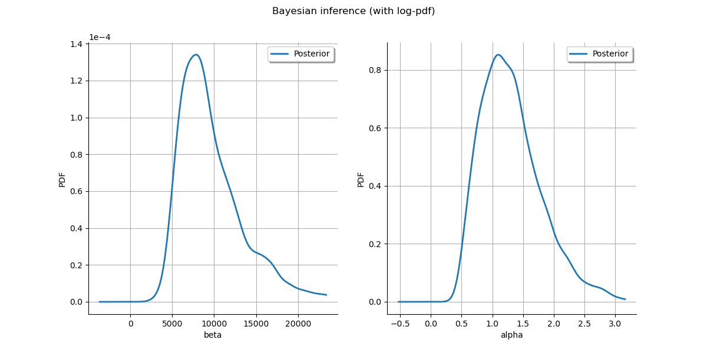

Note
Go to the end to download the full example code
Posterior sampling using a PythonDistribution¶
In this example we are going to show how to do Bayesian inference using the RandomWalkMetropolisHastings algorithm
in a statistical model defined through a PythonDistribution.
This method is illustrated on a simple lifetime study test-case, which involves censored data, as described hereafter.
In the following, we assume that the lifetime  of an industrial component follows the Weibull distribution
of an industrial component follows the Weibull distribution  ,
with CDF given by
,
with CDF given by ![F(t|\alpha,\beta)= 1 - e^{-\left( \frac{t}{\beta} \right)^\alpha}]() .
.
Our goal is to estimate the model parameters  based on
a dataset of recorded failures
based on
a dataset of recorded failures  some of which
correspond to actual failures, and the remaining are right-censored.
Let
some of which
correspond to actual failures, and the remaining are right-censored.
Let  represent the nature of each
datum,
represent the nature of each
datum,  if
if  corresponds to an actual failure,
corresponds to an actual failure,
 if it is right-censored.
if it is right-censored.
Note that the likelihood of each recorded failure is given by the Weibull density:
![\mathcal L(t_i | f_i=1, \alpha, \beta) = \frac{\alpha}{\beta}\left( \frac{t_i}{\beta} \right)^{\alpha-1} e^{-\left( \frac{t_i}{\beta} \right)^\alpha}.]()
On the other hand, the likelihood of each right-censored observation is given by:
![\mathcal L(t_i | f_i=0, \alpha, \beta) = e^{-\left( \frac{t_i}{\beta} \right)^\alpha}.]()
Furthermore, assume that the prior information available on is represented by independent prior laws,
whose respective densities are denoted by  and
and 
The posterior distribution of  represents the update of the prior information on given the dataset.
Its PDF is known up to a multiplicative constant:
represents the update of the prior information on given the dataset.
Its PDF is known up to a multiplicative constant:
![\pi(\alpha, \beta | (t_1, f_1), \ldots, (t_n, f_n) ) \propto \pi(\alpha)\pi(\beta) \left(\frac{\alpha}{\beta}\right)^{\sum_i f_i}
\left(\prod_{f_i = 1} \frac{t_i}{\beta}\right)^{\alpha-1} \exp\left[-\sum_{i=1}^n\left(\frac{t_i}{\beta}\right)^\alpha\right].]()
The RandomWalkMetropolisHastings class can be used to sample from the posterior distribution. It relies on the following objects:
The prior probability density
 reflects beliefs about the possible values
of
reflects beliefs about the possible values
of  before the experimental data are considered.
before the experimental data are considered.Initial values
 of the parameters.
of the parameters.An proposal distribution used to update parameters.
Additionnaly we want to define the likelihood term defined by these objects:
The conditional density
 will be defined as a
will be defined as a PythonDistribution.The sample of observations acting as the parameters of the conditional density
Set up the PythonDistribution¶
The censured Weibuill likelihood is outside the usual catalog of probability distributions in OpenTURNS, hence we need to define it using the PythonDistribution class.
import numpy as np
import openturns as ot
from openturns.viewer import View
ot.Log.Show(ot.Log.NONE)
ot.RandomGenerator.SetSeed(123)
The following methods must be defined:
getRange: required for conversion to the
DistributionformatcomputeLogPDF: used by
RandomWalkMetropolisHastingsto evaluate the posterior densitysetParameter used by
RandomWalkMetropolisHastingsto test new parameter values
Note
We formally define a bivariate distribution on the  couple, even though
couple, even though  has no distribution (it is simply a covariate).
This is not an issue, since the sole purpose of this
has no distribution (it is simply a covariate).
This is not an issue, since the sole purpose of this PythonDistribution object is to pass the likelihood calculation over to RandomWalkMetropolisHastings.
class CensoredWeibull(ot.PythonDistribution):
"""
Right-censored Weibull log-PDF calculation
Each data point x is assumed 2D, with:
x[0]: observed functioning time
x[1]: nature of x[0]:
if x[1]=0: x[0] is a censoring time
if x[1]=1: x[0] is a time-to failure
"""
def __init__(self, beta=5000.0, alpha=2.0):
super(CensoredWeibull, self).__init__(2)
self.beta = beta
self.alpha = alpha
def getRange(self):
return ot.Interval([0, 0], [1, 1], [True] * 2, [False, True])
def computeLogPDF(self, x):
if not (self.alpha > 0.0 and self.beta > 0.0):
return -np.inf
log_pdf = -((x[0] / self.beta) ** self.alpha)
log_pdf += (self.alpha - 1) * np.log(x[0] / self.beta) * x[1]
log_pdf += np.log(self.alpha / self.beta) * x[1]
return log_pdf
def setParameter(self, parameter):
self.beta = parameter[0]
self.alpha = parameter[1]
def getParameter(self):
return [self.beta, self.alpha]
Convert to Distribution
conditional = ot.Distribution(CensoredWeibull())
Observations, prior, initial point and proposal distributions¶
Define the observations
Tobs = np.array([4380, 1791, 1611, 1291, 6132, 5694, 5296, 4818, 4818, 4380])
fail = np.array([True] * 4 + [False] * 6)
x = ot.Sample(np.vstack((Tobs, fail)).T)
Define a uniform prior distribution for  and a Gamma prior distribution for
and a Gamma prior distribution for  .
.
alpha_min, alpha_max = 0.5, 3.8
a_beta, b_beta = 2, 2e-4
priorCopula = ot.IndependentCopula(2) # prior independence
priorMarginals = [] # prior marginals
priorMarginals.append(ot.Gamma(a_beta, b_beta)) # Gamma prior for beta
priorMarginals.append(ot.Uniform(alpha_min, alpha_max)) # uniform prior for alpha
prior = ot.ComposedDistribution(priorMarginals, priorCopula)
prior.setDescription(["beta", "alpha"])
We select prior means as the initial point of the Metropolis-Hastings algorithm.
initialState = [a_beta / b_beta, 0.5 * (alpha_max - alpha_min)]
For our random walk proposal distributions, we choose normal steps, with standard deviation equal to roughly  of the prior range (for the uniform prior)
or standard deviation (for the normal prior).
of the prior range (for the uniform prior)
or standard deviation (for the normal prior).
proposal = []
proposal.append(ot.Normal(0.0, 0.1 * np.sqrt(a_beta / b_beta ** 2)))
proposal.append(ot.Normal(0.0, 0.1 * (alpha_max - alpha_min)))
proposal = ot.ComposedDistribution(proposal)
Sample from the posterior distribution¶
sampler = ot.RandomWalkMetropolisHastings(prior, initialState, proposal)
sampler.setLikelihood(conditional, x)
sampleSize = 10000
sample = sampler.getSample(sampleSize)
# compute acceptance rate
print("Acceptance rate: %s" % (sampler.getAcceptanceRate()))
Acceptance rate: 0.3347
Plot prior to posterior marginal plots.
kernel = ot.KernelSmoothing()
posterior = kernel.build(sample)
grid = ot.GridLayout(1, 2)
grid.setTitle("Bayesian inference")
for parameter_index in range(2):
graph = posterior.getMarginal(parameter_index).drawPDF()
priorGraph = prior.getMarginal(parameter_index).drawPDF()
graph.add(priorGraph)
graph.setColors(ot.Drawable.BuildDefaultPalette(2))
graph.setLegends(["Posterior", "Prior"])
grid.setGraph(0, parameter_index, graph)
_ = View(grid)

Define an improper prior¶
Now, define an improper prior:

logpdf = ot.SymbolicFunction(["beta", "alpha"], ["-log(beta)"])
support = ot.Interval([0] * 2, [1] * 2)
support.setFiniteUpperBound([False] * 2)
Sample from the posterior distribution
sampler2 = ot.RandomWalkMetropolisHastings(logpdf, support, initialState, proposal)
sampler2.setLikelihood(conditional, x)
sample2 = sampler2.getSample(1000)
print("Acceptance rate: %s" % (sampler2.getAcceptanceRate()))
Acceptance rate: 0.37
Plot posterior marginal plots only as prior cannot be drawn meaningfully.
kernel = ot.KernelSmoothing()
posterior = kernel.build(sample)
grid = ot.GridLayout(1, 2)
grid.setTitle("Bayesian inference (with log-pdf)")
for parameter_index in range(2):
graph = posterior.getMarginal(parameter_index).drawPDF()
graph.setColors(ot.Drawable.BuildDefaultPalette(2))
graph.setLegends(["Posterior"])
grid.setGraph(0, parameter_index, graph)
_ = View(grid)
View.ShowAll()

Total running time of the script: ( 0 minutes 6.051 seconds)